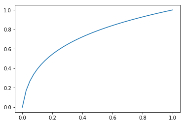

The accompanying Jupyter notebook can be obtained here 4_non_linear_poisson_newton_auto_diff
Nonlinear Poisson equation
Solution method: Newton iteration (Automatic Differentation).
As opposed to manual differentiation, automatic differentiation is a more efficient and accurate way to compute derivatives of functions numerically, making it a popular choice in modern machine learning and optimization applications.
from dolfin import *
import numpy
%matplotlib inline
mesh = IntervalMesh(40,0,1)
V = FunctionSpace(mesh, 'Lagrange', 1)
# Define boundary conditions
tol = 1E-14
left_boundary = CompiledSubDomain("on_boundary && near(x[0],0)")
right_boundary = CompiledSubDomain("on_boundary && near(x[0],1)")
bc_0 = DirichletBC(V, Constant(0.0), left_boundary)
bc_1 = DirichletBC(V, Constant(1.0), right_boundary)
bcs = [bc_0, bc_1]
# Define variational problem
v = TestFunction(V)
du = TrialFunction(V)
u = Function(V) # most recently computed solution
F = inner(q(u)*nabla_grad(u), nabla_grad(v))*dx
FEniCS provides a high-level interface for expressing and solving PDEs and has built-in capabilities for automatic differentiation (AD).
In FEniCS, AD is used to efficiently compute the derivatives of the weak forms of PDEs with respect to the unknowns (e.g., displacement, velocity, pressure, etc.) in the problem. This allows for the automatic construction of the Jacobian matrix and the right-hand side (RHS) vector, which are essential for solving the nonlinear systems arising from finite element discretizations.
By leveraging AD, FEniCS can handle complex PDE problems with ease, as it relieves the user from having to derive and implement the derivatives manually, which can be a tedious and error-prone process, especially for intricate problems.
# Compute solution
problem = NonlinearVariationalProblem(F, u, bcs, J)
solver = NonlinearVariationalSolver(problem)
prm = solver.parameters
prm['newton_solver']['absolute_tolerance'] = 1E-5
prm['newton_solver']['relative_tolerance'] = 1E-5
prm['newton_solver']['maximum_iterations'] = 25
solver.solve()
(6, True)
[<matplotlib.lines.Line2D at 0x7f38ed0a2358>]

# Find max error
u_exact = Expression(
'pow((pow(2, m+1)-1)*x[0] + 1, 1.0/(m+1)) - 1', m=m, degree=1)
u_e = interpolate(u_exact, V)
diff = numpy.abs(u_e.vector()[:] - u.vector()[:]).max()
print('Max error:{0:5.3e}'.format(diff))
Max error:1.559e-06